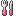
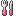

2013/1215Sunお猿のアブー
こんばんは(ヽ´ω`)
能條さんに最近
「ホタテちゃん」と呼ばれる
堀未央奈です！

ホタテみたいで可愛いと
言ってくださるんです！笑
今度ちはるさんと高山さんと
能條さんに遊びに連れていって
もらうので凄く楽しみヽ(*・ω・*)ﾉ
質問返し
◎1番仲のいい1期生は？
○皆さん優しくて面白いです！
生駒さんはいつも私の体調を
気にかけてくださったり、
目を合わせてニコーっと
笑いかけてくださるし
真夏さんとは今度お茶に
行く約束をしたり
ひめちゃんは同い年なので
よく2人でふざけあいます！
もっともっと1期生の方と
仲良くなりたいな꒰⁎×﹏×⁎꒱
◎やっぱり手作りうちわとかって
目立つ？
○目立ちます！
いつもステージ上で
ついつい探してしまいます♬
見つけた途端嬉しさ溢れる！
◎女の子で甘い物苦手って
珍しいよね！理由とかはあるの？
それとも何となく？
○小さい頃からあまり甘い物や
お菓子を食べなくて緑茶に
かたい醤油せんべいとか
栗きんとんとかお漬物を
好んで食べていたからだと思います
でもケーキは時々食べたくなるし
チョコレートは好きなので
大の苦手という訳でもないです！
炭酸飲料もあまり飲まない派。
◎東京に来て驚いた事は？
○電車やバスがすぐ来る事！！
◎1人で出来る簡単料理って
何かありますか？
○お手軽に作れるのだと
生の豚のバラ肉に大葉と梅を
のせてくるくる巻いてフライパンで
焼く料理がオススメですヽ(*・ω・*)ﾉ
すぐに食べれて美味しい！
1人暮らしの方などにオススメです
◎未央奈ちゃんの今年一年を
漢字人文字で表すと何？
○「変」
大きな変化のあった一年であり
周りの環境がどんどん変わっていく
現実に初めは不安も沢山あったけど
私自身の心境や考え方も
今年一年で大きく変わっていって
成長できたんじゃないかなと
思うので「変」にしました
◎食べる量を減らさずに
腕や足を細くする為の何か
いい運動や癖ってありますか？
○私も食べる量は多いので
その分冬は半身浴をして身体を
あっためて血の巡りを良くしたり
時間があればむくみを取る為に
マッサージをしています！
女の子ならではの悩みですよね
一緒に頑張りましょう٩(･ω･｡)و
まだまだ受け付けています♬
そして今日は幕張メッセにて
個別握手会1〜4部でした！
久しぶりの個別握手会なので
沢山の方が会いに来てくださって
本当に本当に楽しかったです♬
支えられている事を凄く実感
したし1人レーンだったので
アットホームで嬉しかった〜
また次少しでも早く皆さんに
お会いできますように( ´∩ω∩`)
何度も言う様に私は握手会などの
イベントが大好きです！
1部は片方でミニお団子！
2部はツインテール！

より目
3部はなんちゃってボブ！

4部は巻きポニーテール！


電話風「嘘やんっ！！」
最後に井上小百合さん
大和里奈さん
お誕生日おめでとうございます♬
井上さんはいつも2期生に
気遣ってくださったりと本当に
優しくて天使みたい
大和さんは私が初期の頃に
一度お写真を撮ってもらった事が
あり、最近大和さんの姫カットが
可愛くてジーっと見てしまいます
今日の純奈と大和さんの
生誕祭に少しだけ参加しました♡
本当におめでとうございます！
幸せな一年にして下さい！
＜告知＞
今日
◎ロックの学園23:00〜BSにて
◎乃木坂ってどこ？00:00〜
12月16日
◎スポーツ報知芸能面
「本紙イチオシ！ブレーク予報」
のコーナーで私のインタビューが
掲載されるので見てください
◎月刊ヤングマガジン発売
乃木坂46がヤンマガさんを
ジャックさせていただきました
ジングルベル〜♪♪
どちらも宜しくお願いします！
ではでは
オットセイが飼いたくて
仕方がない堀未央奈でした
おやすみおな(ヽ´ω`)
2013/12/15 22:00
コメント(556)
昨日はお疲れ様〜(o^^o)
4部とかすごいね(O_O)！
かりんのレーンから帰るとき、みおなが少しぼーっとしてたから「みおなちゃーーん！」って言ったら
笑顔で手を振ってくれたのが本当嬉しかった泣
可愛いすぎる！！！昨日はらんぜとかりんと握手したけど、みおなともしてみたいなって思えたよ♥️
頑張れ！みおな(o^^o)
4部とかすごいね(O_O)！
かりんのレーンから帰るとき、みおなが少しぼーっとしてたから「みおなちゃーーん！」って言ったら
笑顔で手を振ってくれたのが本当嬉しかった泣
可愛いすぎる！！！昨日はらんぜとかりんと握手したけど、みおなともしてみたいなって思えたよ♥️
頑張れ！みおな(o^^o)
堀ちゃん昨日はありがとう！
楽しかったよ！
なんだかすごくオットセイな気分だったけどね(笑)
また来月の幕張個別にも行くからよろしく！
楽しかったよ！
なんだかすごくオットセイな気分だったけどね(笑)
また来月の幕張個別にも行くからよろしく！
握手会お疲れ様
堀ちゃん可愛かったよ〜
また堀ちゃんのところ行くね
堀ちゃん可愛かったよ〜
また堀ちゃんのところ行くね
こんにちは(●´ー｀●)
みおなちゃん大好きです！
とってもとっても美人さんで、私の目標です。
なので、すこしでもみおなちゃんみたいに可愛くなりたいので、美の秘訣を教えてください！
来年のカレンダーはもう買いましたか?
こんにちは＼(^o^)／
昨日はありがとうございます(*^ー^)ノ
昨日は握手券１枚しか持ってなくて、全然お話できなかったから、次回はもっと握手券ゲットしてゆっくりお話したい!!
また遊びに行くからその時はよろしくね(^^)d
それじゃまたね(*^-^*)
昨日はありがとうございます(*^ー^)ノ
昨日は握手券１枚しか持ってなくて、全然お話できなかったから、次回はもっと握手券ゲットしてゆっくりお話したい!!
また遊びに行くからその時はよろしくね(^^)d
それじゃまたね(*^-^*)
昨日幕張での個別握手長い間本当にお疲れ様でした！僕は一部の方に参加させて頂きました…初めての個別だからめちゃめちゃ緊張したよ♪いつもペアだったからやっぱり一対一の握手の方が改めて良いと思ったよ、もうすぐ武道館だね、行くから本当に楽しみにしてますネ、。、、レッスン頑張ってね!!あと報知と月刊ヤングマガジン買ったよ…仕事終わったらゆっくり見るね♪
こんにちは
髪型全部似合ってますよー
握手会行きたいなぁ
ホタテちゃんいい名前ですね 笑
なんか質問多いので今度します
次のブログも楽しみにしてます
髪型全部似合ってますよー
握手会行きたいなぁ
ホタテちゃんいい名前ですね 笑
なんか質問多いので今度します
次のブログも楽しみにしてます
昨日のロックの学園観ましたよ~!
ラストにバレッタで未央奈ちゃんセンター、とっても良かったです♪
これからもセンターの未央奈ちゃんを見たいなぁ☆
ラストにバレッタで未央奈ちゃんセンター、とっても良かったです♪
これからもセンターの未央奈ちゃんを見たいなぁ☆
未央奈ー
こんにちはー。
ご飯食べる前は、沢山食べるぞーと意気込むも、少し食べたらもういいかなってなるオカツンです
乃木どこ見たよー。
さすが、みおなちゃん。
ご飯に漬け物セレクトさすがです。
沢山食べてすごいねー。
もりもり食べる女子はほんと見てて気持ちいいー。
あ！今日スポーツ報知にみおなちゃんの記事出てたねー。
おおっ！ってなったよ
握手会もお疲れさまでした。
色んな髪型、これからもチャレンジしてねー
ではでは、またお仕事頑張ってきます。
みおなちゃんも毎日忙しいでしょうが体に気をつけてね。
またねー
こんにちはー。
ご飯食べる前は、沢山食べるぞーと意気込むも、少し食べたらもういいかなってなるオカツンです
乃木どこ見たよー。
さすが、みおなちゃん。
ご飯に漬け物セレクトさすがです。
沢山食べてすごいねー。
もりもり食べる女子はほんと見てて気持ちいいー。
あ！今日スポーツ報知にみおなちゃんの記事出てたねー。
おおっ！ってなったよ
握手会もお疲れさまでした。
色んな髪型、これからもチャレンジしてねー
ではでは、またお仕事頑張ってきます。
みおなちゃんも毎日忙しいでしょうが体に気をつけてね。
またねー
未央奈ちゃんこんにちは。
握手会お疲れ様です(*^^*)
一緒により目しているのはきいちゃんかな？
とても可愛いです(笑)
俺も田舎育ちなので東京遊び行った時は電車の車両の多さなどにビックリした記憶があります(*^▽^*)
ロックの学園は見逃してしまいましたが、乃木どこは見ました♪
未央奈ちゃんが結構食べてたので驚きました(◎-◎;)
ではこの辺で( ^^)/
握手会お疲れ様です(*^^*)
一緒により目しているのはきいちゃんかな？
とても可愛いです(笑)
俺も田舎育ちなので東京遊び行った時は電車の車両の多さなどにビックリした記憶があります(*^▽^*)
ロックの学園は見逃してしまいましたが、乃木どこは見ました♪
未央奈ちゃんが結構食べてたので驚きました(◎-◎;)
ではこの辺で( ^^)/
バイキンマン坊主だぁーーーッ！ ハッヒフヘホーーッ！ 握手会お疲れさまーッ！ 来年いっぱい握手しにいくからよろしくネーッ ゴメーーンッ 夕べは忘年会だったから酔いつぶれてロックの学園も乃木どこも見逃したぁーーーッ！ 残念無念！ 悔しいーーッ!! でも色んな人たちといーーっぱい遊ぶ約束できてよかったねぇーッ！ 楽しみがいっぱいあってイイネ♪ どんどん１期生の先輩達に好かれてってるみたいだしもっともっと仲良くなれるといいネ!? 今度誰とどんな遊びしたか逐一報告してくれないかなぁー？ 楽しみにしてるヨ じゃあまたコメするネ 今週はいよいよ武道館だから体調管理に気をつけてガンバレーーーッ!!! バイバイキーン!!
個別お疲れっす(^^)
正直何話せばいいかって感じで2,3部握手したけど2部では高速まばたきみたいなあ～って言ったらやってくれたし3部ではRの法則で観た電源OFF のやつやってくれたしなんでもやってくれて楽しかった(笑)
色んな技また観させてください(笑)
正直何話せばいいかって感じで2,3部握手したけど2部では高速まばたきみたいなあ～って言ったらやってくれたし3部ではRの法則で観た電源OFF のやつやってくれたしなんでもやってくれて楽しかった(笑)
色んな技また観させてください(笑)
ほたてちゃん！
ホタテちゃん！
ほりちゃん！
未央奈ちゃん＼(^o^)／
写メほんと可愛い！
おれの好きな髪型ばかりで！
３月握手会いくの
たのしみ！
はやく会いたい！
ホタテちゃんって
呼んでもいいですか？(笑)
ボブ好きなんだよね！
なんちゃってボブ最高すぎて！
データフォルダが
ホタテちゃんで埋まってく＼(^o^)／
こんにちわ!^^
乃木どこ見たよ!
みおなちゃんってお漬物（？）選んだよね？
私もお漬物大好き（❁^∀^❁）
*。*。質問。*。*
みおなちゃんっておしゃれだよね!
いつからおしゃれに目覚めた？
握手会お疲れ様でした。
未央奈ちゃん凄く可愛いです。
ポニーテールもなんちゃってボブも、凄く似合ってます！私服も凄くオシャレ…！
私も、食べる量が多いです(笑)でも量よりも質な気がします。ヘルシー思考でいかないとなーと思ってます。しかし中々難しい(笑)
そうですね。未央奈ちゃん、一緒に頑張りましょう！
質問！今回の握手会の私服はどこで買いましたか？
ほたてちゃん！未央奈ちゃんたしかに美白だから！可愛いニックネーム(^0_0^)
未央奈ちゃん凄く可愛いです。
ポニーテールもなんちゃってボブも、凄く似合ってます！私服も凄くオシャレ…！
私も、食べる量が多いです(笑)でも量よりも質な気がします。ヘルシー思考でいかないとなーと思ってます。しかし中々難しい(笑)
そうですね。未央奈ちゃん、一緒に頑張りましょう！
質問！今回の握手会の私服はどこで買いましたか？
ほたてちゃん！未央奈ちゃんたしかに美白だから！可愛いニックネーム(^0_0^)
こんばんわ〜＼(^o^)／
昨日質問し忘れてました〜汗
質問〜
未央奈ちゃんって視力いいんですか？？
自分は悪いです〜(´･_･`) けどメガネかけるのは授業中とライブのときぐらいです〜(^^)
過去に質問返ししてるやつだったらすいません汗汗
これからもお仕事とかがんばってください！！
でわ(^^)ノシ
昨日質問し忘れてました〜汗
質問〜
未央奈ちゃんって視力いいんですか？？
自分は悪いです〜(´･_･`) けどメガネかけるのは授業中とライブのときぐらいです〜(^^)
過去に質問返ししてるやつだったらすいません汗汗
これからもお仕事とかがんばってください！！
でわ(^^)ノシ
未央奈ちゃん、昨日は個別握手会お疲れ様でした！ もんたです(^^)
昨日は3部でお邪魔しました。
やっぱり緊張してしまって・・・
未央奈ちゃんを見た瞬間、髪が短い(゜ロ゜)
びっくりしたよ！
なんちゃってボブでちょっと安心("⌒∇⌒")
でも、ボブもなかなかいけてました！
イメージ変わるね！
未央奈ちゃんの笑顔がいいね(^^)v
次は、武道館でその笑顔を見せてね！
昨日は3部でお邪魔しました。
やっぱり緊張してしまって・・・
未央奈ちゃんを見た瞬間、髪が短い(゜ロ゜)
びっくりしたよ！
なんちゃってボブでちょっと安心("⌒∇⌒")
でも、ボブもなかなかいけてました！
イメージ変わるね！
未央奈ちゃんの笑顔がいいね(^^)v
次は、武道館でその笑顔を見せてね！
みおなーー！！！
昨日個別行ったよ♡
みおなかわいすぎて手の震えとまらなかった…(ヽ´ω`)笑
いっぱいなかよくなろーって言ってくれて嬉しかったよ(ヽ´ω`)♡
仲良くなりたいからまた行くね！♡←
ぜんぶかわいいけど特にまきポニーかわいすぎてる(´･ω･`)♡
お団子とかボブ風とかそれ以外も髪型ってじぶんでやってるのー？？
昨日個別行ったよ♡
みおなかわいすぎて手の震えとまらなかった…(ヽ´ω`)笑
いっぱいなかよくなろーって言ってくれて嬉しかったよ(ヽ´ω`)♡
仲良くなりたいからまた行くね！♡←
ぜんぶかわいいけど特にまきポニーかわいすぎてる(´･ω･`)♡
お団子とかボブ風とかそれ以外も髪型ってじぶんでやってるのー？？
握手会お疲れ様でした(｡ｰωｰ)ﾉﾞ
4部の最初に行ったのですが楽しかったですし元気もらいました！
今回は未央奈ちゃんが好きなダッフルコートを着ました！
これからも着ていくのでよろしくお願いします(>_<)ゞ
そして－。
今週はいよいよ武道館ですね!!
ステージサイドというところで観ます☆
頑張ってください！
ではまた！
4部の最初に行ったのですが楽しかったですし元気もらいました！
今回は未央奈ちゃんが好きなダッフルコートを着ました！
これからも着ていくのでよろしくお願いします(>_<)ゞ
そして－。
今週はいよいよ武道館ですね!!
ステージサイドというところで観ます☆
頑張ってください！
ではまた！
どうもっっ
ろってぃ推しのここあです♡笑
堀ちゃんゎ、最近めっちゃ頑張ってて、バレッタのセンターって凄い結果残せてるんぢゃないかなって思う……
てか、みおな、オットセイかいたいってwwww
飼育できるん！？笑
いくらかなぁぁぁ←
乃木どこでも目立ってきてると思うし、
一期生メンバーとも仲良くできてるみたいで良かった♪
これからも、頑張ってください‼︎
あたしは、アンダーを応援することが多いけど、選抜メンバーも大好きなんで‼︎笑
みおな大好きよーっ♡
ろってぃ推しのここあです♡笑
堀ちゃんゎ、最近めっちゃ頑張ってて、バレッタのセンターって凄い結果残せてるんぢゃないかなって思う……
てか、みおな、オットセイかいたいってwwww
飼育できるん！？笑
いくらかなぁぁぁ←
乃木どこでも目立ってきてると思うし、
一期生メンバーとも仲良くできてるみたいで良かった♪
これからも、頑張ってください‼︎
あたしは、アンダーを応援することが多いけど、選抜メンバーも大好きなんで‼︎笑
みおな大好きよーっ♡
ほたてちゃん
昨日はありがとう
握手1人でちょっと寂しかった？？
終了後のじゅんなの生誕祭
見てたよ
やっぱり じゅんなと居ると
お茶目なみおなが見れて良かったよ
トマト いや りなの生誕祭も
遠慮しないで良かったのに
最後は一緒に写真取れて良かったね
乃木坂メンバー ファン の
こういう所がとても好き
乃木坂のファンになって
良かったと改めて思ったよ
握手では 無理やり おめでとう
おめでとう
を催促しちゃって ごめんね
また逢いに行きたいな
真夏さんに みおなと
どうするの と話していて
パフエとか いいんじゃない
と勧めてしまったが
あ～ 甘いもの ダメなんだよね
ごめんちゃい
行ったらブログ入れておいてね
最後に
ＯＦＦの件 結構共感できる
ほたてちゃんは目が大きいから
目が開いたままですが
私は元々目が細いので
ONの時でも 寝るな!!
と言われた事あるよ
では またね
ふじぽん
昨日はありがとう
握手1人でちょっと寂しかった？？
終了後のじゅんなの生誕祭
見てたよ
やっぱり じゅんなと居ると
お茶目なみおなが見れて良かったよ
トマト いや りなの生誕祭も
遠慮しないで良かったのに
最後は一緒に写真取れて良かったね
乃木坂メンバー ファン の
こういう所がとても好き
乃木坂のファンになって
良かったと改めて思ったよ
握手では 無理やり
を催促しちゃって ごめんね
また逢いに行きたいな
真夏さんに みおなと
どうするの と話していて
パフエとか いいんじゃない
と勧めてしまったが
あ～ 甘いもの ダメなんだよね
ごめんちゃい
行ったらブログ入れておいてね
最後に
ＯＦＦの件 結構共感できる
ほたてちゃんは目が大きいから
目が開いたままですが
私は元々目が細いので
ONの時でも 寝るな!!
と言われた事あるよ
では またね
ふじぽん
昨日は2部の握手会に参加させていただきました
はじめましてでしたけど…
お会い出来て嬉しかったです。
ありがとうございました
はじめましてでしたけど…
お会い出来て嬉しかったです。
ありがとうございました
やっと全握近づいてきた～＾＾
9月の名古屋の個別以来だから
めっちゃ楽しみ～
より目かわいいよ～＾＾
てか玲奈ちゃんと夢の国行くとかすごいね
こんど行った時の話聞かせて
では(o・・o)/
9月の名古屋の個別以来だから
めっちゃ楽しみ～
より目かわいいよ～＾＾
てか玲奈ちゃんと夢の国行くとかすごいね
こんど行った時の話聞かせて
では(o・・o)/
堀ちゃん一個言い忘れてたことがあった。
第1部の堀ちゃんが一番可愛かったよ！
第1部の堀ちゃんが一番可愛かったよ！
みおなちゃんー！！
最近コメントも出来てなくて、全国握手にも行けてなくて申し訳なかったよ；；
でも！
昨日久しぶりに個別握手に行ったら『お久し振りです！』って元気に声を掛けてくれて、あぁ覚えてくれてるんだ、と思って幸せな気分になれました。ありがとう。
久々に実際に見るみおなちゃんは、最初のペア握手の時よりも堂々としていて、表情も豊かになってて、センター抜擢という環境と自分自身の努力が、みおなちゃんを成長させたんだな、と思います。
そうそう、新聞と月刊ヤンマガも買って読んだよ！
キュートなサンタ衣装で癒された♪
これからもドンドン活躍の場が広がって、忙しくなると思うけど、体調に気を付けて頑張ってね。
応援してます。
コバより
最近コメントも出来てなくて、全国握手にも行けてなくて申し訳なかったよ；；
でも！
昨日久しぶりに個別握手に行ったら『お久し振りです！』って元気に声を掛けてくれて、あぁ覚えてくれてるんだ、と思って幸せな気分になれました。ありがとう。
久々に実際に見るみおなちゃんは、最初のペア握手の時よりも堂々としていて、表情も豊かになってて、センター抜擢という環境と自分自身の努力が、みおなちゃんを成長させたんだな、と思います。
そうそう、新聞と月刊ヤンマガも買って読んだよ！
キュートなサンタ衣装で癒された♪
これからもドンドン活躍の場が広がって、忙しくなると思うけど、体調に気を付けて頑張ってね。
応援してます。
コバより
あー未央奈～武道館いけないよ～ぐすん
ぐすん
あいたい～ぐすん
未央奈ってゲームとかするの？
ぐすん
あいたい～ぐすん
未央奈ってゲームとかするの？
堀ちゃん！
２期として入ってきた直後からずっと応援してる者です。
きっと堀ちゃんの立場上たくさんツライこともあると思います。
人前や中央にいる人、人気のある人には必ず他の人の妬みや恨みがつきものです。
だけどそれを乗り切ってこそスターになるのではないでしょうか。
だから堀ちゃんにも、周りのいちいち物申してくる人等に自分自身で打ち勝って大きく強いアイドルになって欲しいです。
つらい時は私たちのように堀ちゃん一筋で応援しているファンが見守っていることを忘れないでくださいね！
頑張れ～！
２期として入ってきた直後からずっと応援してる者です。
きっと堀ちゃんの立場上たくさんツライこともあると思います。
人前や中央にいる人、人気のある人には必ず他の人の妬みや恨みがつきものです。
だけどそれを乗り切ってこそスターになるのではないでしょうか。
だから堀ちゃんにも、周りのいちいち物申してくる人等に自分自身で打ち勝って大きく強いアイドルになって欲しいです。
つらい時は私たちのように堀ちゃん一筋で応援しているファンが見守っていることを忘れないでくださいね！
頑張れ～！
みおなん昨日きいちゃんレーンから見えた♡♡
超可愛いかったし、握手楽しそうだった♩♡
乃木坂ちゃんに会うたびに可愛くなりたい！って思って自分磨き頑張れるよ！☆だいすきー♡♡
ホタテちゃん！可愛いww
握手会の時の髪型って部によって変えるんだねぇ☆
なんか、１月の握手会、二部と三部にお邪魔するので、なんかもっと楽しみになってきた！^^;
なんちゃってボブみたーい！！(笑)
☆☆☆☆☆質問☆☆☆☆☆
能條さんのことは何て呼んでるの？
三時間遅刻したらどうする？ww
握手会の時の髪型って部によって変えるんだねぇ☆
なんか、１月の握手会、二部と三部にお邪魔するので、なんかもっと楽しみになってきた！^^;
なんちゃってボブみたーい！！(笑)
☆☆☆☆☆質問☆☆☆☆☆
能條さんのことは何て呼んでるの？
三時間遅刻したらどうする？ww
みおなこんばんはヽ(´▽`)ﾉ
奈良の鹿男こと、あつしたんやでっ♪
武道館のレッスン大変なんかな(･_･?)
体調崩さへんようにね(bﾟv`*)
友達からスポーツ報知のみおなの記事、写メで送られてきたで♪
なんか推しが新聞とかに載ると嬉しい(*≧∀≦*)
それじゃあ明日も頑張ってこーね(bﾟv`*)
奈良の鹿男こと、あつしたんより。
奈良の鹿男こと、あつしたんやでっ♪
武道館のレッスン大変なんかな(･_･?)
体調崩さへんようにね(bﾟv`*)
友達からスポーツ報知のみおなの記事、写メで送られてきたで♪
なんか推しが新聞とかに載ると嬉しい(*≧∀≦*)
それじゃあ明日も頑張ってこーね(bﾟv`*)
奈良の鹿男こと、あつしたんより。
みおなちゃん♡
昨日、握手会に行った黄色いニット被ってたやつです(´；ω；｀)笑！！！
本当に可愛かった！！みおなちゃん！！！
大好きです！！！
ゆずか
未央奈ぁぁぁぁぁぁぁ＼( ’ω’)／
いまちだよ!!
まず最初にコメント遅くなってごめんなさい(>_<)
昨日は幕張個握お疲れ様でした!!
3,4部しか行けなかったからもっと未央奈とお話したかったよ〜(>_<)
おれんじと連番してたんだけど未央奈との握手はやっぱり一番楽しかったよ！！
未央奈に大好きって言ってもらえてすんごい嬉しかった＼( ’ω’)／
僕も未央奈が大好きです!!(*^_^*)
次の握手会が待ち遠しい(>_<)
次は京都全握に行く計画を立ててます!!
カモノハシくんとおれんじくんと連番するカモ？？？
ホタテちゃん可愛さ＼( ’ω’)／
カモマイルが足りないカモォ
＼( ’ω’)／＼( ’ω’)／ウオオオオオアアアーーーーッ！
いまちだよ!!
まず最初にコメント遅くなってごめんなさい(>_<)
昨日は幕張個握お疲れ様でした!!
3,4部しか行けなかったからもっと未央奈とお話したかったよ〜(>_<)
おれんじと連番してたんだけど未央奈との握手はやっぱり一番楽しかったよ！！
未央奈に大好きって言ってもらえてすんごい嬉しかった＼( ’ω’)／
僕も未央奈が大好きです!!(*^_^*)
次の握手会が待ち遠しい(>_<)
次は京都全握に行く計画を立ててます!!
カモノハシくんとおれんじくんと連番するカモ？？？
ホタテちゃん可愛さ＼( ’ω’)／
カモマイルが足りないカモォ
＼( ’ω’)／＼( ’ω’)／ウオオオオオアアアーーーーッ！
未央奈ー☆*:.｡. o(≧▽≦)o .｡.:*☆
このうちのコメ読んでくれてないかもだけど、4部ありがとう‼︎
ゆめちゃんおかえり！って言ってくれてめっちゃ嬉しかった！いまちくんに負けないwwwwm
てことで、昨日の握手会のおさらいね！( ^ω^ )
熱中症をゆっくり言うと何になる⁇
認知されるように頑張るね！出来たら毎週いつ更新してるか教えて欲しいです！
ずっと推しだよ！ばいちゃ(=ﾟωﾟ)ﾉ
このうちのコメ読んでくれてないかもだけど、4部ありがとう‼︎
ゆめちゃんおかえり！って言ってくれてめっちゃ嬉しかった！いまちくんに負けないwwwwm
てことで、昨日の握手会のおさらいね！( ^ω^ )
熱中症をゆっくり言うと何になる⁇
認知されるように頑張るね！出来たら毎週いつ更新してるか教えて欲しいです！
ずっと推しだよ！ばいちゃ(=ﾟωﾟ)ﾉ
握手会行きたかったけど、
中学2年生なので
行けませんでした(/_;)
未央奈ちゃんに会いたかったです…
今度の握手会は、
絶対いきますね♪
未央奈ちゃんは
ポニーテールの印象が大きいです！
でも、どんな髪型でも
似合う未央奈ちゃん、
憧れます(*´ω｀*)
中学2年生なので
行けませんでした(/_;)
未央奈ちゃんに会いたかったです…
今度の握手会は、
絶対いきますね♪
未央奈ちゃんは
ポニーテールの印象が大きいです！
でも、どんな髪型でも
似合う未央奈ちゃん、
憧れます(*´ω｀*)
二月の幕張の個別いくから覚えてといてねー！
質問
未央奈ちゃんが乃木坂に入ろうと思ったきっかけは？
あと、理由は？
AKBグループの推しメンと乃木坂の推しメンは？
教えて(*≧∀≦*)
未央奈ちゃんが乃木坂に入ろうと思ったきっかけは？
あと、理由は？
AKBグループの推しメンと乃木坂の推しメンは？
教えて(*≧∀≦*)
より目かわいい
堀ちゃん、ボブも似合うんだね。
お姫様みたい
すごく可愛い
お姫様みたい
すごく可愛い
みおなは前髪まっすぐじゃなくて、端っこを伸ばすともっと可愛いと思う！
みおなぁぁぁぁぁぁ、可愛い('-^*)b
握手いけなかったん。きいちゃんレーンのとき見えたﾖｰﾖｰ( ･_･)/-------◎
カモマイルが足りたカモォ
握手いけなかったん。きいちゃんレーンのとき見えたﾖｰﾖｰ( ･_･)/-------◎
カモマイルが足りたカモォ
初コメです♥️
のぎどこ毎週みてます！
最近私はみおなちゃん推しです！
これからもよろしく！
質問ー！！
今度ののぎどこで
みおなちゃんの髪型(おだんごへあー)
がみたい！！
してくれますか？？♥️
のぎどこ毎週みてます！
最近私はみおなちゃん推しです！
これからもよろしく！
質問ー！！
今度ののぎどこで
みおなちゃんの髪型(おだんごへあー)
がみたい！！
してくれますか？？♥️
堀ちゃんはどんな髪型も似合うね
◇質問◇
乃木どこでご飯を何杯もおかわりしてたけど、普段もあのくらい食べるの？
◇質問◇
乃木どこでご飯を何杯もおかわりしてたけど、普段もあのくらい食べるの？
「ホタテみたいで可愛い」
！？！？？！！？！？？？？？？
まーた能條が変なこと言ってるのかーー！(笑)
未央奈！
遅くなった！こめんと！
握手会うらやまー
早く行きたいなあ。
なんちゃってボブいいねいいね♡
いつかサンタコスしてーーーーー！わら
もういくつ寝ると握手会ーーーーヽ(｀･ω･´)ﾉ♡
楽しみすぎてはげる。
質問は今回なしで！
んじゃね！
短くてごめんね！
遅くなった！こめんと！
握手会うらやまー
早く行きたいなあ。
なんちゃってボブいいねいいね♡
いつかサンタコスしてーーーーー！わら
もういくつ寝ると握手会ーーーーヽ(｀･ω･´)ﾉ♡
楽しみすぎてはげる。
質問は今回なしで！
んじゃね！
短くてごめんね！
未央奈さん⊂((・x・))⊃
確かに未央奈さんはホタテみたいに白くてツルツルですね！笑
乃木どこ観ました！
お漬物ならいくらでも食べられるんですよね…さすが、食べっぷりが良かったです♪( ´▽｀)赤かぶらのお漬物、食べてみたいなぁ…
久々に未央奈さんの三つ編みヘアーが見たいです⊂((・x・))⊃
確かに未央奈さんはホタテみたいに白くてツルツルですね！笑
乃木どこ観ました！
お漬物ならいくらでも食べられるんですよね…さすが、食べっぷりが良かったです♪( ´▽｀)赤かぶらのお漬物、食べてみたいなぁ…
久々に未央奈さんの三つ編みヘアーが見たいです⊂((・x・))⊃
こんばんは。
なんちゃってボブ可愛すぎ
なんちゃってボブ可愛すぎ
初コメです！
私も未央奈ちゃんと同じ高2です！
未央奈ちゃん可愛くて羨ましいです
質問です！
私はよく女子力がないと言われるのですが、未央奈ちゃんにとっての女子力って何ですか？
私も未央奈ちゃんと同じ高2です！
未央奈ちゃん可愛くて羨ましいです
質問です！
私はよく女子力がないと言われるのですが、未央奈ちゃんにとっての女子力って何ですか？


ホタテちゃん・・・
ホタテ？？ｗ
つるつるってことなんかな？？
ホタテ食べるの好きだから、なんでもいいや～(*ﾉω・*)ﾃﾍ
「変」か・・・
確かに、一年でめっちゃ環境変わったもんねｗ
最初、変って聞いて、未央奈が変なのかと思った( ･`ω･´)
個別握手お疲れ様～(^^♪
もう、めいいっぱい未央奈に会いに行ってしまった(〃∇〃)
レーンも混んでたね～☆ミ
未央奈、大人気やね( ｰ`дｰ´)ｷﾘｯ
髪型、１部のお団子がかわいかったな(●´ω｀●)
俺、お団子ヘアーに弱いんだよね(*ﾟ∀ﾟ)
安定のポニーテールも好きだけど(*´∀｀*)
未央奈に会えて、めっちゃ元気もらえたわ(*´ω｀*)
嘘やんっ！！
かわいさが嘘やん！！やわぁ・・・←親バカですｗ
スマホの充電器やん( ･`ω･´)
・・・ちゃんとツッコんでみたｗ
ロックの学園見たよ～(・∀・)
バレッタ、流さないのかな～と思ったら、最後にバレッタ流れて、めっちゃテンション上がったｗ
未央奈のダンスが見れたのは、マジで貴重だったわ(*´ω｀*)
あの時の盛り上がりを思い出して、テレビの前で高まってた☆ミ
アブーカワイイよねぇ・・・
昔、ディズニータイムって番組で、アラジンの大冒険っていう短編アニメやってて。。
それが大好きで、良く見てたｗ
もちろん映画本編も好きだけどね(*´∀｀*)
俺のカラオケで必ず歌う曲は、“A whole new world”だしｗ
ハモるところが大好き(〃∇〃)
さっ、今日はこれから部屋を掃除します。。
ポイント上げないとね←
ではでは～